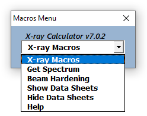

The NIST_XCOM.xlam Add-In and NIST_XCOM.xlsm Workbook provide functions and macros
for getting the attenuation properties of atoms and compounds.
LazzyIzzi is not currently associated with NIST but was a guest researcher there many years ago. These Excel files are not a NIST product but most of the data within them were downloaded from the NIST XCOM database and are used with permission. It should be noted that NIST retains copyright on the XCOM data and reserves the right to charge for its use in the future. See the XCOM website for more information.
XLAM or XLSM, which one is better for you?
Use the Add-In xlam file to make the functions and macros part of your Excel application.
Pro: The X-ray functionality will be available is all workbooks created after the Add-In is installed
Con: Dependent workbooks will not work if the Add-In is not present or has been uninstalled.
Use the Workbook xlsm file to use the functions and macros without altering your Excel environment.
Pro: The X-ray functionality will always be present in individual workbooks created by copying the xlsm.
Con: Each copy will duplicate all of the NIST data and will require more storage.
Add-In Functionality
Macros:
GetSpectrum - Lists and optionally plots the tabulated NIST mass absorption coefficients vs X-ray energy.
BeamHardening- Uses a 1D model to estimate/optimize a CT scanner setup that will produce an acceptable level of beam hardening.
Special Note: Downloading Excel add-ins and macro enabled
workbooks can be dangerous due to the possibility of embedded malware.
Newer versions of Excel provide significant protection. Please take
appropriate precautions before enabling any downloaded Excel workbook.
This add-in file size after download should be 1,100,188 bytes and
1,101,824 bytes on disk.
Place it in a folder where Excel can find it, on a PC usually C:\Users\YourUserName\AppData\Roaming\Microsoft\AddIns\
Start Excel, Use File->Options->Customize Ribbon and check the Developer and Add-Ins boxes, click OK
In the DEVELOPER tab click the Add-Ins icon.
In the AddIns Dialog check NIST_XCOM. Click OK.
Click the ADD-INS tab. The GetSpectrum, BeamHardening, and Help items should be present in the Toolbar Commands menu.
To uninstall the Add-In click the developer tab and then the Add-Ins icon. In the Add-Ins dialog uncheck NIST_XCOM and click OK.
Workbook(xlsm) Installation:
The Workbook does not require installation.
Download it and open it in Excel
Click the Enable Content button. A menu dialog box should appear.

X-ray Macros Menu.
The xlsm file has slightly over 100 data sheets. The default behavior is to keep them hidden (most of then are also locked). The Show/Hide menu items allows you to view the sheets if necessary. If the Workbook should encounter an error, the menu will be unloaded. Use Ctrl+Shift+M to reload the menu.
Using the Functions
To use the functions, Select an output cell(s), Click the
FORMULAS tab and then click the Insert Function icon. Fill in the required data and click OK.
Select X-ray Functions.
Select the function you want to use.
Select the input cells. Click OK.
View the results.
Excel Array Functions
GetFormualMevFromMuLin and GetFormualMevFromMuLinRatio functions
return arrays. This is noted in their input dialogs. Select at least two
contiguous row cells for output before calling the function. Do Not
click OK in the function dialog. Use Ctrl-Shift-Enter to execute the
function. The first value returned is the number of solutions. The contiguous row cells should be the number of solutions + 1.
Using the Macros
Click the ADD-INS tab(xlam) or use the Menu(xlsm) and click GetSpectrum or
BeamHardening.
Get Spectrum
Use the radio buttons to select Atom or Formula
Get Spectrum returns a list of absorption cross-section data for
atoms or formulas over a selected energy range.
Get Spectrum for an atom.
The atoms can be listed by Symbol, Number, or Name. I prefer
Name.
Get Spectrum for a Formula.
Formulas are entered manually using an Atom1:Count1:Atom2:Count2
formatted Formula
Check the desired cross-sections
Enter the desired energy range Min and Max
Select the number of interpolated points to add to the output.
This will create a separate list of N approximately log-spaced points
in the selected range.
Check Plot Spectrum if desired
Data and spectrum for the Formula example.
Beam Hardening
Please refer to the ImageJ Scanner_Setup page for a
description of how this Macro works.
Select BeamHardening from the ADD-INS Toolbar Commands.
Edit the Source, Sample, Detector, and Plot Range fields.
Click Update Plot. The effective energy, sample tau,
BeamHardening %, and photon efficiency % appear in the plot title.
Twiddle the parameters to optimize the beam hardening and
photon efficiency.
OR enter the level of tolerable beam hardening in the Target
BH% field and click Optimize to let the Solver maximize Photon Use%
while constraining sample tau and beam hardening. Note: Increase the
default 1 KeV plot increment to 5 KeV to speed up the solver.
The Spectral distributions for the Settings.
The Optimized Spectral distributions a 10% Target
BH.